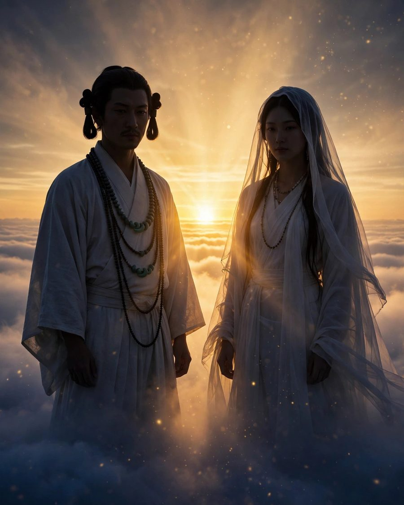

古事記 上巻・第1話（全17話）
天地のはじまり
天と地が初めて開けたとき、高天原に天之御中主神が現れ、続いて神々が次々に成った。最初の五柱は「別天神」、その後の国之常立神から伊耶那岐神・伊耶那美神までは「神世七代」とまとめられている。
物語
高天原に成った三柱の神
天と地が初めて開けたとき、高天原に最初に成った神の名は天之御中主神である。次に高御産巣日神、次に神産巣日神が成った。この三柱はみな、相手を持たない「独神」として成り、姿を隠した。なお原文の小注は、「高天原」の「天」の字を「アマ」と読むよう指示している。
くらげのように漂う国と、別天神
次に、国がまだ若く、水に浮いた脂のようで、くらげのように漂っていたとき（原文はこの部分を音で「久羅下那州多陀用弊流」と書く）、葦の芽のように萌え伸びる物から成った神が宇摩志阿斯訶備比古遅神である。次に天之常立神が成った。この二柱も独神として成り、姿を隠した。ここまでの五柱の神を「別天神」という。
国之常立神と、男女一組の神々
続いて国之常立神、次に豊雲野神が成り、この二柱もまた独神として姿を隠した。その後は男女一組の神が続いて成る。宇比地迩神と妹の須比智迩神、角杙神と妹の活杙神、意富斗能地神と妹の大斗乃弁神、於母陀流神と妹の阿夜訶志古泥神、そして伊耶那岐神と妹の伊耶那美神である。

神世七代
国之常立神から伊耶那美神までをあわせて「神世七代」という。小注によると、独神の二柱はそれぞれ一柱で一代と数え、続く男女の十柱は二柱で一代と数える。こうして最後の七代目に伊耶那岐神・伊耶那美神が現れ、次の国生みの話へとつながっていく。
古事記の原文に書かれていることを、やさしい言葉でまとめたものです（訳書の文章は使っていません）。小見出しは、読みやすくするために本文の言葉から付けました。
この話の要点
- 本文古事記で最初に現れる神は、高天原に成った天之御中主神である。続いて高御産巣日神・神産巣日神が成り、三柱とも独神として姿を隠した。
- 本文天之御中主神から宇摩志阿斯訶備比古遅神・天之常立神までの五柱は「別天神」とされ、後に続く神世七代とは分けて書かれている。
- 本文国之常立神から伊耶那岐神・伊耶那美神までが「神世七代」である。独神二柱は一柱で一代、男女十柱は二柱で一代と数え、その最後に国生みの主役となる伊耶那岐神・伊耶那美神が現れる。
- 日本書紀と比較日本書紀の本文（第一段）は、天地が鶏の卵のように混ざり合った状態から分かれたと説明し、最初の神を国常立尊とする。天之御中主神にあたる天御中主尊は、一書第四に「又曰」として高天原に生まれた神として挙がるだけである。
- 解説國學院大學の神名データベースによれば、天之御中主神・高御産巣日神・神産巣日神の三柱は古事記の序文の言葉から「造化三神」と呼ばれる。天之御中主神はこの冒頭にしか出てこず、何をした神かが描かれないため、どのような神かは明らかにしにくいとされる。 ［出典］
- 解説同データベースによれば、古事記の神世七代は、伊耶那岐神・伊耶那美神の誕生を到達点とし、そこへ至る過程を神々の出現によって段階的に表したものとみる解釈が多い。その過程が何を表すか（国土の形成、男女神の身体の完成など）については説が分かれる。 ［出典］
登場する神・人物と、祀る神社
- 天之御中主神あめのみなかぬしのかみ祀る神社：秩父神社、物部神社
- 高御産巣日神たかみむすひのかみ祀る神社：廣田神社
- 天常立尊あめのとこたちのみこと祀る神社：駒形神社
- 国常立尊くにのとこたちのみこと祀る神社：玉置神社
- 伊邪那岐命いざなぎのみこと祀る神社：白山比咩神社、伊弉諾神宮、多賀大社、雄山神社、伊佐須美神社、諏訪神社（長崎）、三峯神社、熊野那智大社、熊野速玉大社、玉置神社、英彦山神宮
- 伊邪那美命いざなみのみこと祀る神社：熊野本宮大社、白山比咩神社、伊弉諾神宮、多賀大社、波上宮、伊佐須美神社、諏訪神社（長崎）、大日霊貴神社、三峯神社、熊野那智大社、熊野速玉大社、玉置神社、英彦山神宮、佐太神社
- 高天原天地が開けたとき、最初の神々が成った場所。小注は「天」を「アマ」と読むよう指示するが、語全体の読みは原文からは確かめられない。
- 神産巢日神かむむすひのかみ天之御中主神・高御産巣日神に続いて三番目に成った独神。
- 宇摩志阿斯訶備比古遅神うましあしかびひこじのかみ国が漂っていたとき、葦の芽のように萌え伸びる物から成った別天神。
- 豊雲野神とよくもののかみ国之常立神に続いて成った独神で、神世七代の第二代。
- 宇比地迩神うひじにのかみ神世七代で最初に現れる男女一組の神の男神。
- 須比智迩神すひちにのかみ宇比地迩神と一組で現れる女神（原文で「妹」とされる）。
- 角杙神つのぐいのかみ神世七代の男女一組の神の男神。
- 活杙神いくぐいのかみ角杙神と一組で現れる女神。
- 意富斗能地神おおとのじのかみ神世七代の男女一組の神の男神。
- 大斗乃弁神おおとのべのかみ意富斗能地神と一組で現れる女神。
- 於母陀流神おもだるのかみ神世七代の男女一組の神の男神。
- 阿夜訶志古泥神あやかしこねのかみ於母陀流神と一組で現れる女神。
名前を押すと、神社巡りノートの神様のページ（古事記・日本書紀での名前と場面）が開きます。
日本書紀との違い
書紀の本文は、天地が分かれる前の様子を鶏の卵のような混沌として描き、天地の間に葦の芽のような物が生じて神となったとする。最初の神は国常立尊で、次に国狭槌尊・豊斟渟尊が現れ、天之御中主神にあたる神は本文に出てこない。
天地之中生一物，狀如葦牙，便化爲神，號國常立尊古事記の最初の三柱にあたる天御中主尊・高皇産霊尊・神皇産霊尊は、書紀では一書第四に「又曰」として、高天原に生まれた神として挙げられるだけである。
高天原所生神名，曰天御中主尊書紀の本文でも国常立尊から伊弉諾尊・伊弉冉尊までを「神世七代」と呼ぶが、その中身は、独りで成った男神三柱（第一段）と男女四組の八神（第二段）である。古事記の角杙神・活杙神にあたる角樴尊・活樴尊は、本文ではなく第三段の一書第一に見える。
自國常立尊，迄伊弉諾尊、伊弉𠕋尊，是謂神世七代者矣資料編
原文で読む（4か所）
天地初發之時，於高天原成神名，天之御中主神。天と地が初めて開けたとき、高天原に成った神の名は天之御中主神である。
如葦牙因萌騰之物而成神名葦の芽のように萌え伸びる物から成った神の名は（宇摩志阿斯訶備比古遅神）。
上件五柱神者，別天神。ここまでの五柱の神は「別天神」である。
上件自國之常立神以下、伊耶那美神以前，并稱神世七代国之常立神から伊耶那美神までを、あわせて「神世七代」という。
出典と、印の意味
「本文」は古事記に書かれていること、「日本書紀と比較」は日本書紀の原文で確かめた違い、「解説」は公的な機関の解説で確かめたことです。原文の引用は、中文維基文庫の校訂本文から一字一句そのまま写しています（〔 〕は原文の小注）。絵はすべて AI で作った想像図で、実在のご神体・社殿・人物を写したものではありません。
- 古事記 上巻 校訂本文 中文維基文庫
- 日本書紀 巻第一 中文維基文庫
- 國學院大學「神名データベース」 https://kojiki.kokugakuin.ac.jp/shinmei/amenominakanushinokami/
- 國學院大學「神名データベース」 https://kojiki.kokugakuin.ac.jp/shinmei/kuninotokotachinokami/
- 國學院大學「神名データベース」 https://kojiki.kokugakuin.ac.jp/shinmei/kamumusuhinokami/
- 國學院大學「神名データベース」 https://kojiki.kokugakuin.ac.jp/shinmei/umashiashikabihikojinokami/
- 國學院大學「神名データベース」 https://kojiki.kokugakuin.ac.jp/shinmei/toyokumononokami/
- 國學院大學「神名データベース」 https://kojiki.kokugakuin.ac.jp/shinmei/uhijininokami/
- 國學院大學「神名データベース」 https://kojiki.kokugakuin.ac.jp/shinmei/suhichininokami/
- 國學院大學「神名データベース」 https://kojiki.kokugakuin.ac.jp/shinmei/tsunoguinokami/
- 國學院大學「神名データベース」 https://kojiki.kokugakuin.ac.jp/shinmei/ikuguinokami/
- 國學院大學「神名データベース」 https://kojiki.kokugakuin.ac.jp/shinmei/otonojinokami/
- 國學院大學「神名データベース」 https://kojiki.kokugakuin.ac.jp/shinmei/otonobenokami/
- 國學院大學「神名データベース」 https://kojiki.kokugakuin.ac.jp/shinmei/omodarunokami/
- 國學院大學「神名データベース」 https://kojiki.kokugakuin.ac.jp/shinmei/ayakashikonenokami/